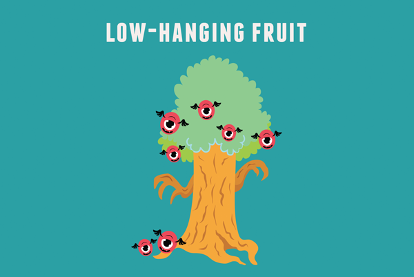
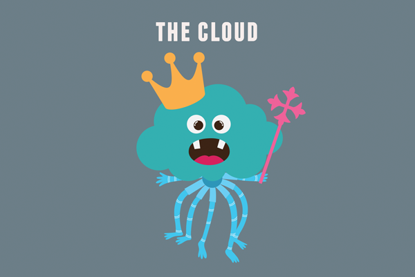

Bestiary of Cyber Intelligence
by Andrea Little Limbago, Illustrations by Anne Harper
Welcome to the First Annual Endgame Halloween Blog! Inspired by the recently released Bestiary of Intelligence masterpiece, we have built upon this model with a Bestiary of Cyber Intelligence 2014: Top 10 Creatures. These beasts represent common clichés, terms, or phrases that get over-used, misused, or simply abused through the course of cyber intelligence writings. As you read it, we’re certain other specimens will come to mind. Start keeping track of them now for potential inclusion into our bestiary collection for 2015!
- Viral meme: Viral memes are self-replicating, cacophonous creatures that can diffuse globally in the blink of an eye. No one knows how they emerge or why they so abruptly disappear. Viral memes rarely stand up well to historical scrutiny, and analysts have yet to clearly identify why some viral memes endure so long even after all normal rationality would predict their demise.
- Low-hanging fruit: Contrary to conventional wisdom, this animal is not edible. In fact, it can be quite poisonous, lulling analysts into complacency, and forcing them to gravitate toward the easiest, simplest solution achieved with minimal effort exerted. The low-hanging fruit has a very short life span, rotting quickly and is readily replaced once another low-hanging fruit is discovered.

- Hacking back: Once thought to be a thing of fantasy, there have been increased sightings of the hacking back over the last few years. Most describe it similarly to a triceratops, with a shielded head to protect itself and large teeth and horns to attack. Many in the scientific community deny its existence, and there are divergent descriptions by those who have seen it.
- Malicious attack: Distant cousin and foe of the heartwarming smiley emoticon, malicious attacks are moody creatures that often can hide for days or weeks unbeknownst to their owners, only to emerge once discovered by adept inspection by a cyber analyst. These dark, slimy creatures have elongated, strong appendages, enabling them to surmount any defense. Because of their notorious reputation, when any data is breached, a malicious attack is the first to get blamed.
- Compromised systems: These unfortunate beasts are quite fragile, often come in groups and are easily swayed by external forces. However, they camouflage easily into the vast IT infrastructure and thus are quite difficult to see with the naked eye. Similar to the golden snitch in Quidditch, analysts compete with each other in an attempt to be the first to discover a compromised system.
- Big data: This aquatic creature prefers extreme weather situations - floods, deluges, storms. Big data exhibit long mandibles and a broad head, steam rolling everything in their path. Analysts must be very careful with big data, as it is impossible for them to comprehend yet simultaneously holds the solution to every plausible analytic question ever pondered.
- Trolls: It wouldn’t be Halloween without a troll, but this isn’t just any grumpy old troll. These trolls are quick, dark creatures, slithering quickly and quietly in and out of forums. Trolls sow discord wherever they go, popping in and out of conversations. At times confused with a devil’s advocate, trolls don’t generally start arguments to help improve decision-making, but instead seek to create disputes.
- TLDR: The TLDR is every analyst’s worst nightmare. A very complex, multi-faceted beast, the TLDR requires constant nurturing and support to help it grow to adulthood. Analysts spend significant amounts of time growing the TLDR. This unusual beast, however, has the ability to dismember itself upon reaching adulthood, and can divide and metamorphose into creatures that sadly become unrecognizable to analysts.
- The Cloud: The cyber holy grail, digital heaven, and the closest thing to cyber religion. The cloud is a loyal, fix-all beast that is everything and nothing at once. More importantly, if an analyst can’t find the data, they just need to look in the cloud. If there’s a problem, the cloud can fix it. The one technology that will never fail, and similar to choosing C in multiple choice exams, if a cyber practitioner doesn’t know the technical solution to a problem, just recommend the cloud.

- Attribution problem: A close companion of the Cloud, the attribution problem is an analyst’s go-to friend if they come across inconclusive findings. The attribution problem gets blamed for many analytic hurdles, which makes it one of the most melancholy beasts. Seriously, if the data fails to yield interesting insights, it’s generally because of the attribution problem. If an analyst can’t find the root cause of malicious attacks or compromised systems, the attribution problem quickly becomes the scapegoat.